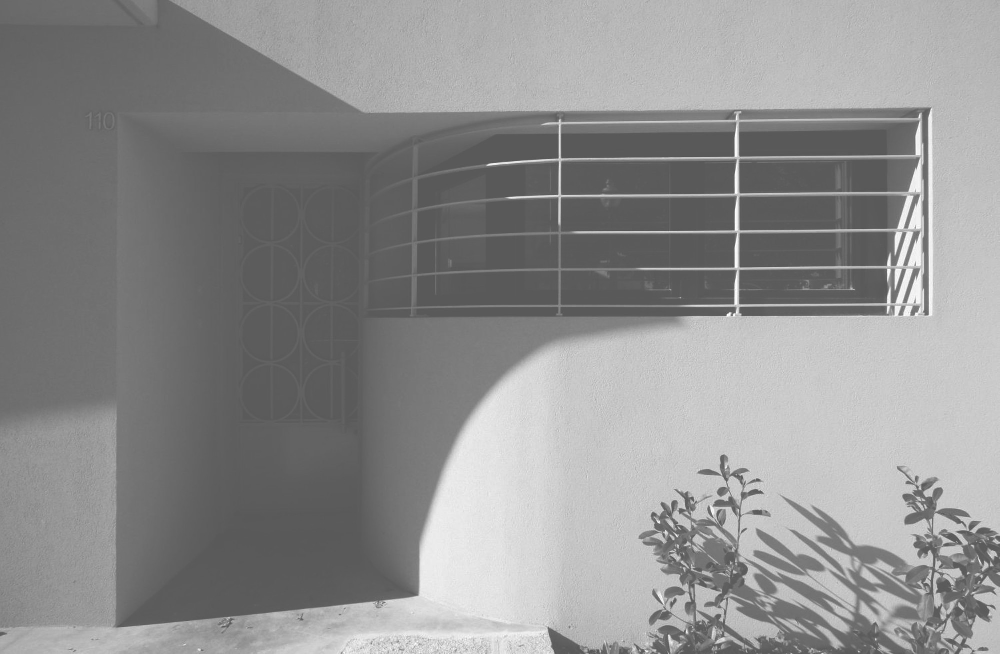
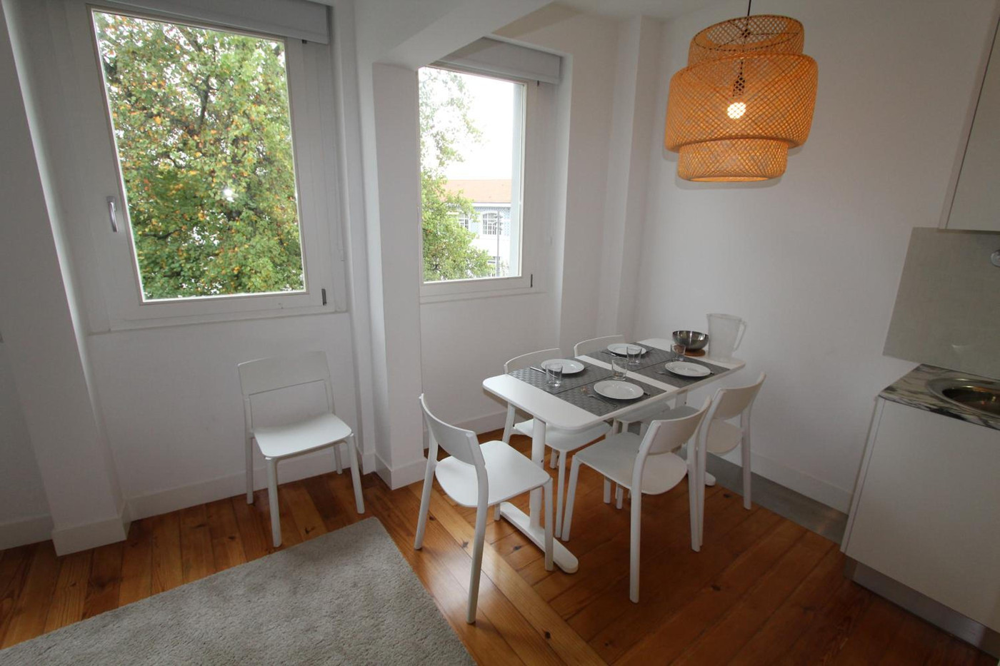
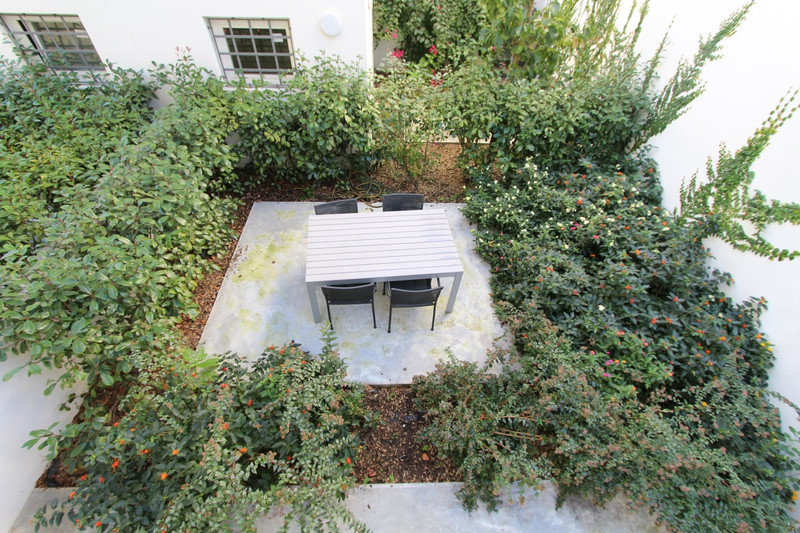
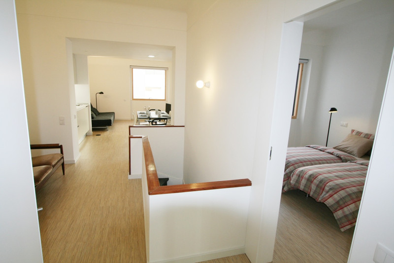
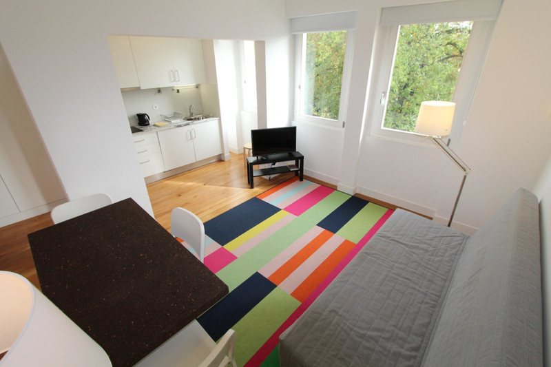
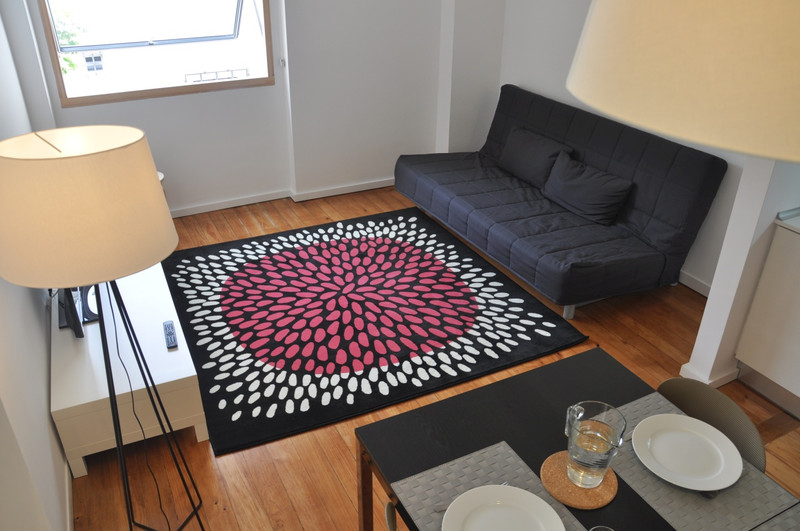
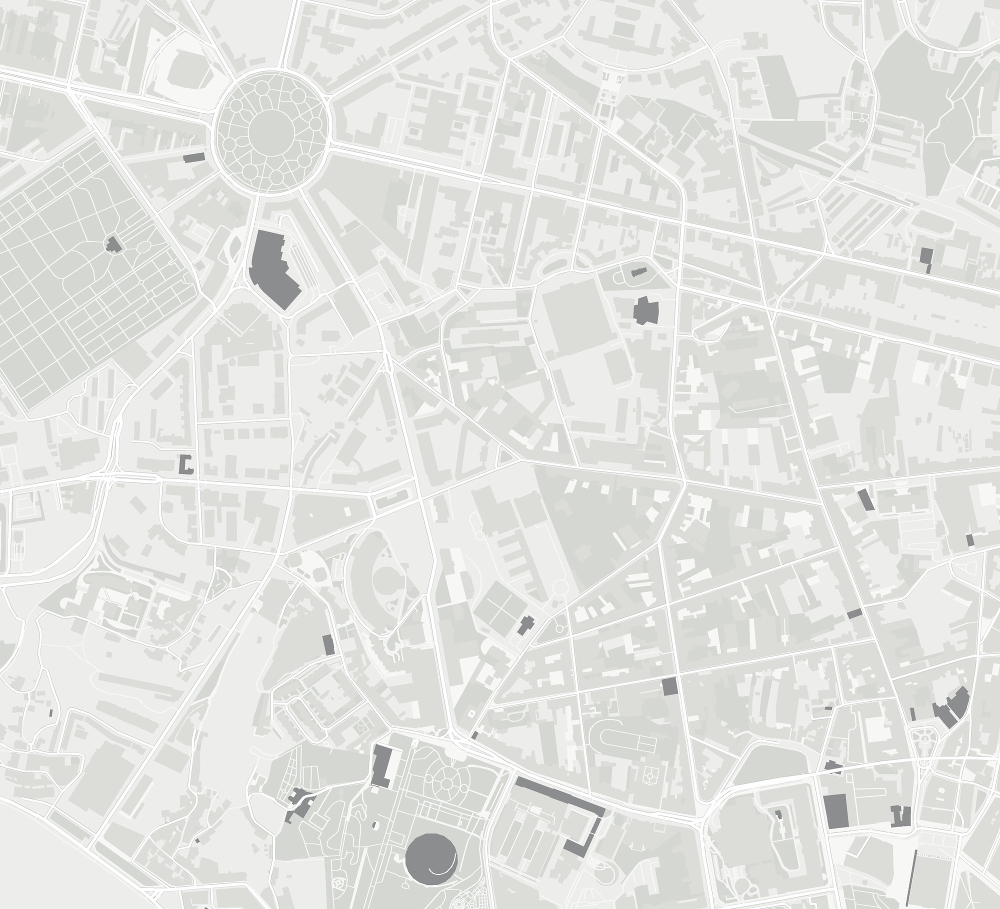
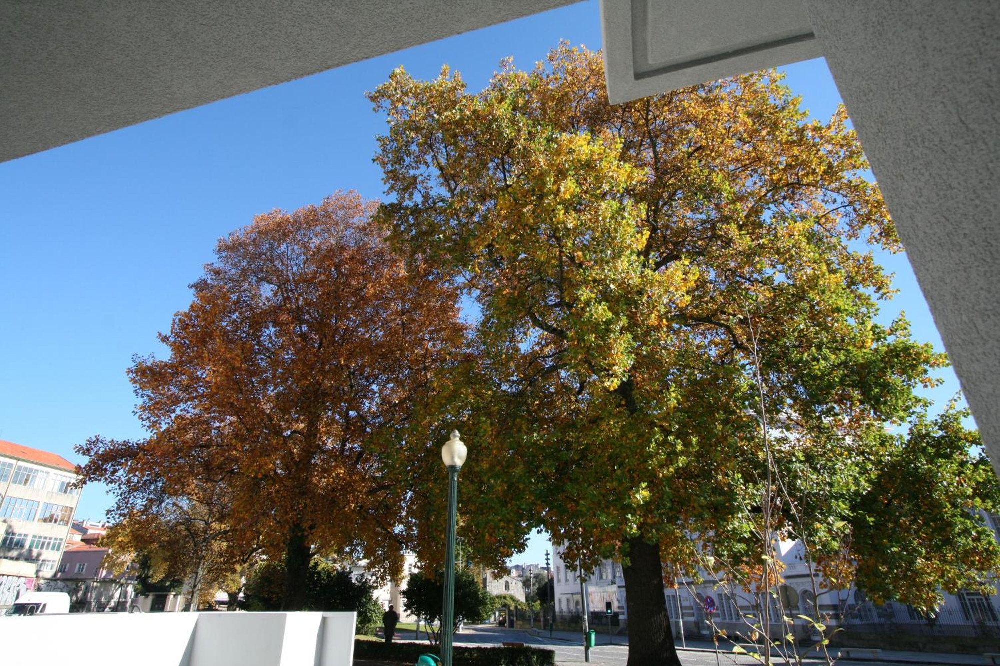

OPO.APT
Sete apartamentos num prédio de 1936 · Praça de Pedro Nunes, Porto
Art Déco por fora,de hoje por dentro.
Um prédio modernista de 1936 na Praça de Pedro Nunes, entre Cedofeita e a Boavista, reabilitado entre 2012 e 2016 segundo o dono.
Lá dentro há sete apartamentos inteiros, do rés-do-chão com pátio ao último andar com terraço, para quatro a seis pessoas.
Sete formasde ficar.
Do rés-do-chão com pátio ao terraço do último andar, no mesmo prédio. Três já têm página própria.

112-R Terraço
T1 · 3.º andar com terraço · até 4 pessoas
Com um terraço de cerca de 100 m²
Ver o apartamento
114-0 Pateo
T2 · rés-do-chão com pátio · até 6 pessoas
Com um pátio ajardinado só seu
Ver o apartamento
112-D Deco
T2 · 2.º andar · até 6 pessoas
Dois quartos e uma sala com sofá-cama
Ver o apartamento
Os outros quatro apartamentos do prédio ainda não têm página aqui; reservam-se já no Booking.

Em construção110-0 Pateo
T2 · rés-do-chão com jardim · até 6

Em construção110-1 Deco
T2 · 1.º andar · até 6

Em construção112-E Deco
T2 · 2.º andar · até 6

Em construção114-1 Deco
T2 · 1.º andar com varanda · até 6
Nosapartamentos.
Casas inteiras, prontas para uma noite ou uma semana.
Casas inteiras
Cada apartamento é só de quem o reserva, com cozinha e casa de banho próprias.
Wi-Fi e cabo
Internet e televisão por cabo.
Ar condicionado
E aquecimento para o inverno.
Roupa e limpeza
Roupa de cama, toalhas e limpeza semanal.
Metro a 400 m
Carolina Michaelis, com a linha E direta ao aeroporto.
Animais a pedido
Sem custo extra.
Estacionamento
Privado, a pedido, pago à parte.
Berço de viagem
Grátis, a pedido.
Localização
Os lugares que o dono recomenda, com o tempo a pé pelas ruas.

Rua de CedofeitaAvenida da BoavistaRua da BoavistaRua de Álvares CabralRua de Júlio DinisRua do BreinerRua de Dom Manuel IIRua do RosárioMCarolina MichaelisMLapa1Cedofeita2Rua de Cedofeita3Casa da Música4Bom Sucesso5Bairro das Artes6Palácio de CristalOPraça de Pedro Nunes, 110-114 200 mPraça de Pedro Nunes, 110-114O prédio Art Déco de 1936 onde ficam os sete apartamentos, entre Cedofeita e a Boavista.
- 1Igreja de Cedofeita3 min a pé
- 2Rua de Cedofeita8 min a pé
- 3Casa da Música12 min a pé
- 4Mercado do Bom Sucesso8 min a pé
- 5Rua de Miguel Bombarda12 min a pé
- 6Jardins do Palácio de Cristal16 min a pé
Tempos a pé calculados pelo percurso nas ruas (OpenStreetMap).
- 933 106 241 Chamada para a rede móvel nacional
- opo.apt@gmail.com

Antesde chegar.
- Check-in
- 16:00 – 23:30
- Check-out
- até às 11:00
- Animais
- a pedido, sem custo
- Fumar
- não
- Festas
- não
- Do aeroporto
- metro, linha E, até Carolina Michaelis
Horários e regras do anúncio no Booking, iguais nos sete apartamentos. A taxa turística do Porto paga-se à chegada.
O que está incluídoNos apartamentos da OPO.APT
Nos apartamentos
- Apartamento inteiro, com cozinha e casa de banho próprias
- Wi-Fi e televisão por cabo
- Ar condicionado
- Aquecimento
- Roupa de cama e toalhas
- Limpeza semanal
No prédio
- Prédio Art Déco de 1936, reabilitado entre 2012 e 2016
- Um apartamento com pátio no rés-do-chão
- Um apartamento com terraço no 3.º andar
- Sem elevador: sobe-se por escadas
A pedido
- Limpeza extra
- Troca de roupa de cama e toalhas
- Berço de viagem, grátis
- Estacionamento privado, pago à parte
Bom saber
- Check-in das 16:00 às 23:30
- Check-out até às 11:00
- Não se fuma; não há festas
- Animais a pedido, sem custo
- Taxa turística do Porto paga à chegada